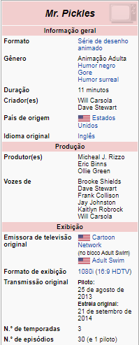
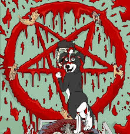

Feito Por: Victor Oliveira
 Sinopse
Mr. Pickles é uma série animada adulta, criada por Will Carsola & Dave Stewart para o canal Adult Swim. A série gira em torno da familia Goodman, e o relacionamento de seu filho, Tommy com seu cachorro, o demoniaco Mr. Pickles. A primeira temporada da série teve 10 episodios, que estreou nos Estados Unidos em em 21 de setembro de 2014 e terminou em 23 de novembro de 2014. A série já foi renovada pra uma segunda temporada. No Brasil é exibida pelo canal TBS.